← GDD visual v0.10Gale Breaker / build nativa de avaliação
Do Blender para a arena
Quatro lutadores com 27 animações cada, três arenas, 16 ataques principais, tutorial, treino e Arcade. Estas são capturas reais do Godot, com modelos estilizados produzidos no Blender.
Baixar versão Windows · v0.10 · Controles e instruções
158 verificações passaram: 73 gerais, 42 de animação e 43 dos novos sistemas. Os 16 confrontos automáticos terminaram. Balanceamento competitivo, conforto com controles físicos e acabamento artístico precisam de avaliação humana.
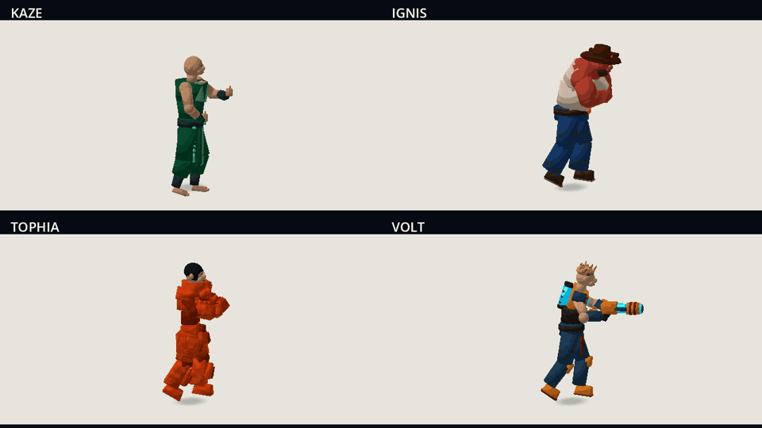
J1 → J2 → J3 dos quatro lutadores, capturados a partir dos clips exportados do Blender.
Comparação dentro do jogo
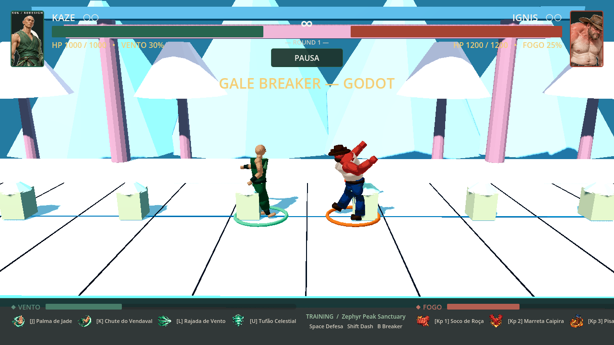
Antes: poses e enquadramento da base recebida.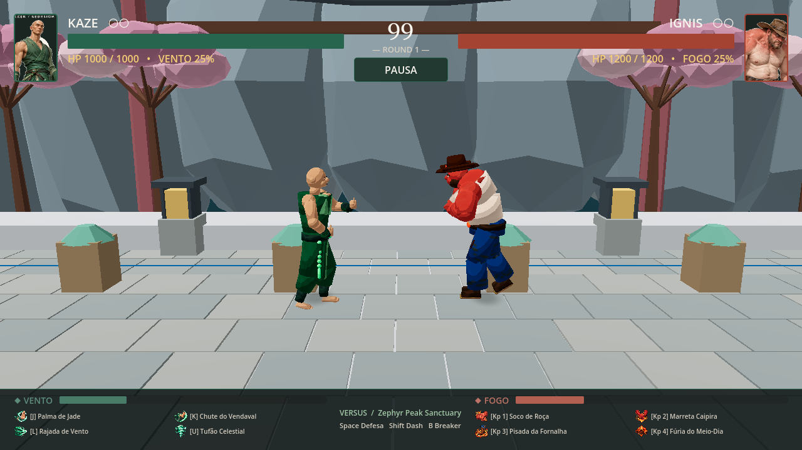
Depois: guarda corrigida, enquadramento mais próximo e cenário com contraste controlado.Golpes e efeitos
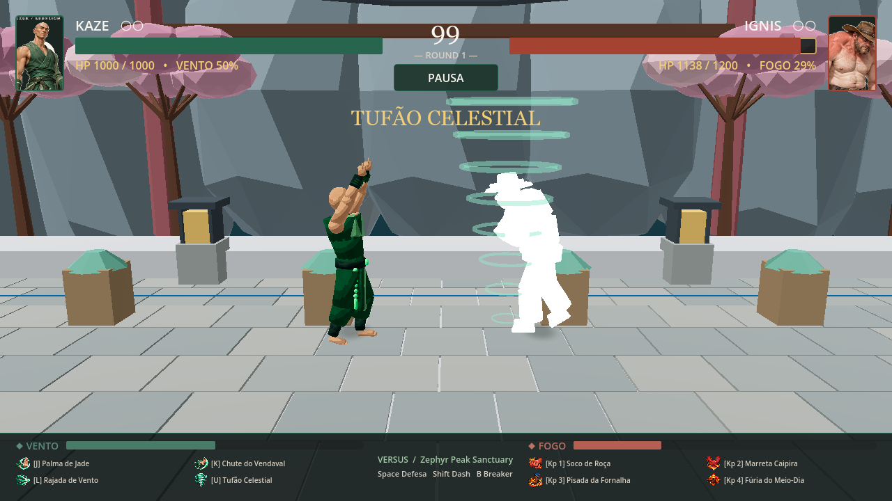
Kaze · Tufão Celestial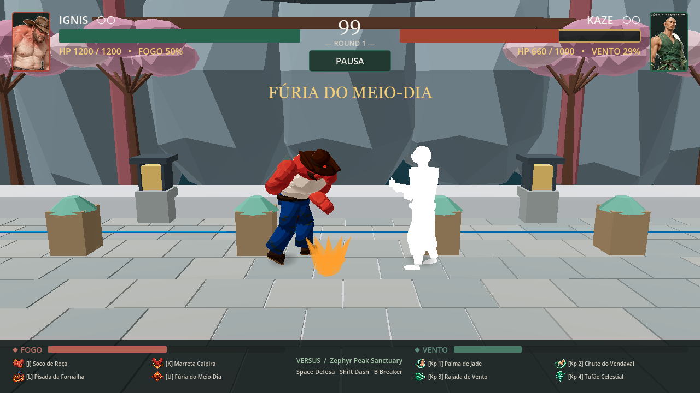
Ignis · Fúria do Meio-Dia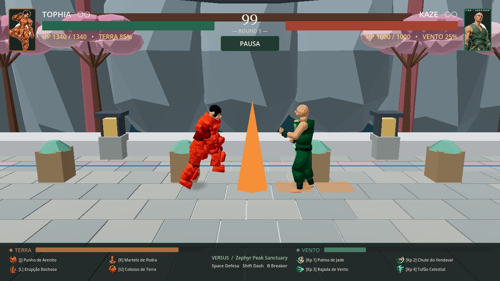
Tophia · Erupção Rochosa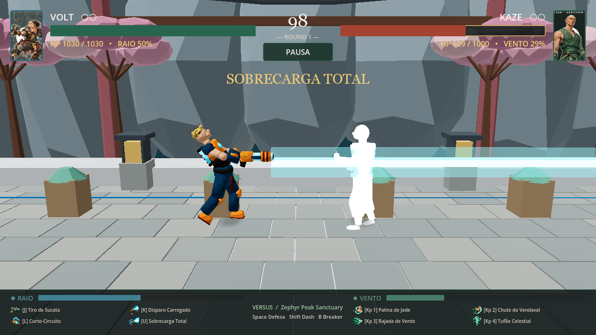
Volt · Sobrecarga TotalPoses de contato
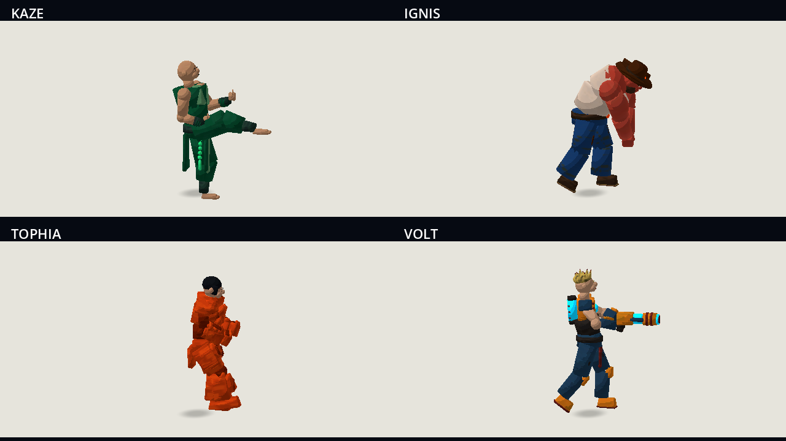
Finalizadores básicos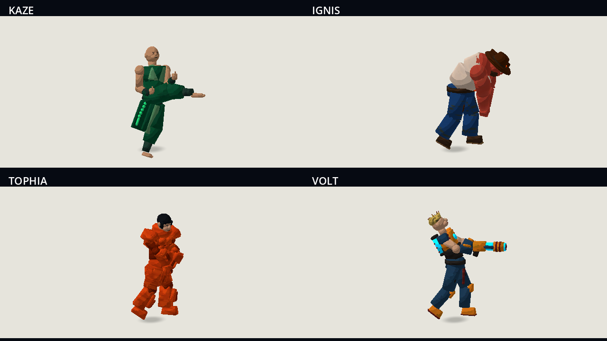
Golpes fortesPersonalidade na vitória
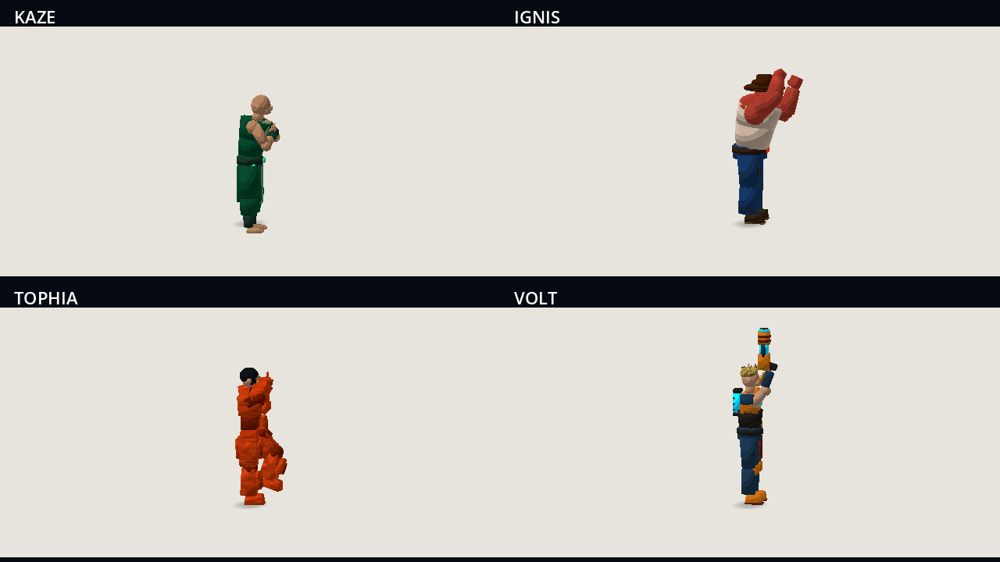
Saudação de Kaze, chapéu de Ignis, pose de Tophia e canhão de Volt.Menus e configuração
 Menu principal vazio, apenas Gale Breaker.
Menu principal vazio, apenas Gale Breaker. Seleção e habilidades independentes de P1/P2.
Seleção e habilidades independentes de P1/P2.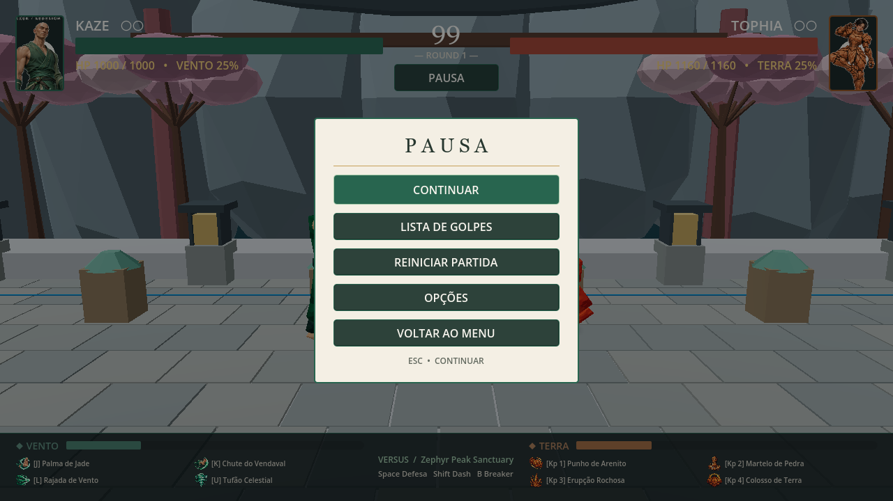
Pausa congela o combate.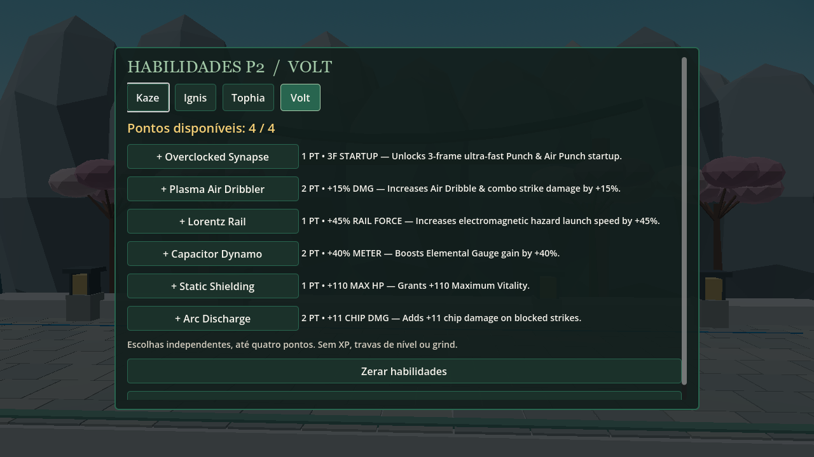
Escolha livre dentro de quatro pontos, sem pré-requisitos.Três arenas com aviso de perigo
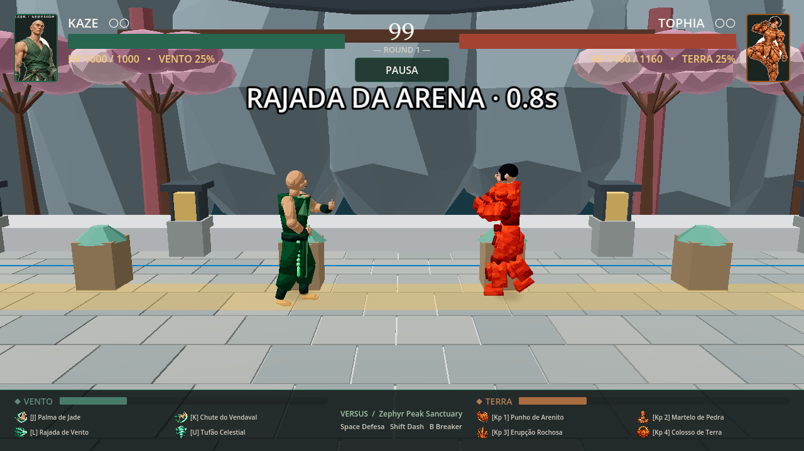
Rajada do santuário.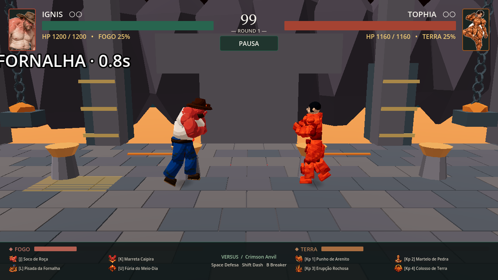
Erupção da forja. Carga em queda no bazar.
Carga em queda no bazar.Aprender e continuar
 Tutorial guiado com oito objetivos.
Tutorial guiado com oito objetivos.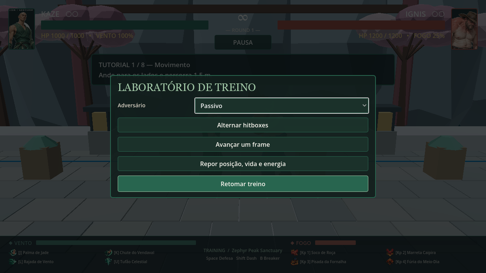
Treino: F2 abre dummy, hitboxes e avanço de frame.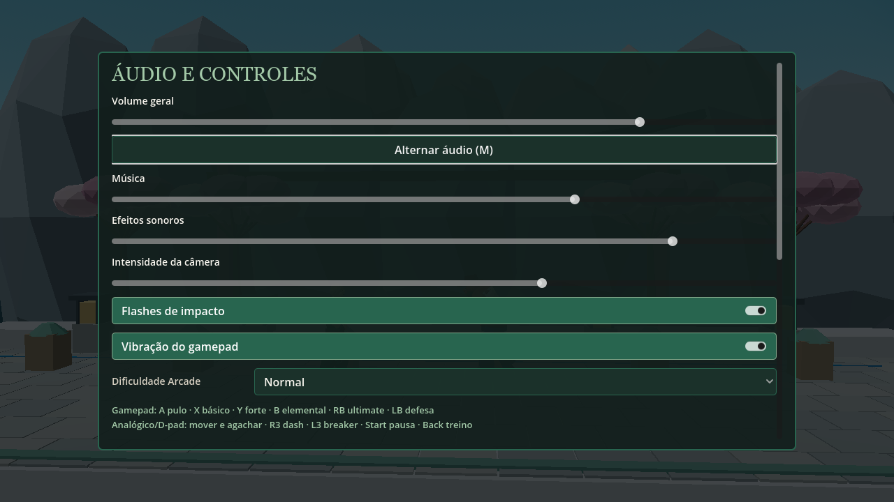
Áudio, flashes, shake, vibração, dificuldade e controles.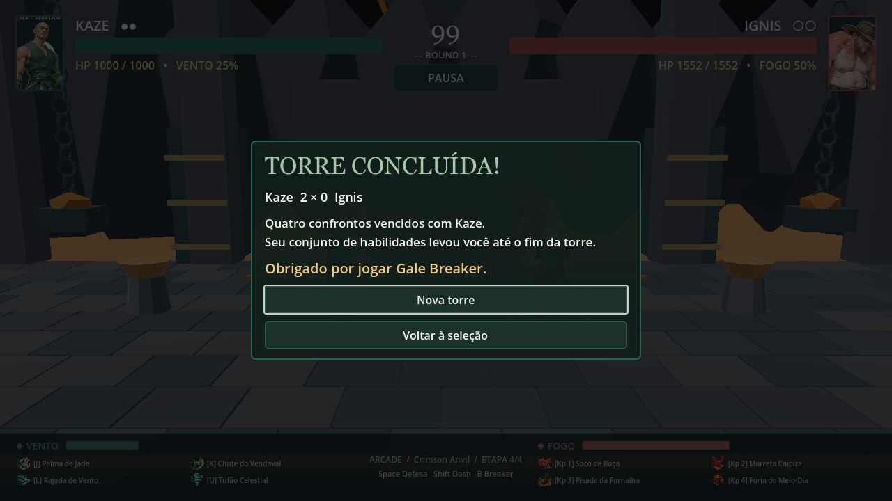
Torre Arcade com continue salvo e encerramento.Comandos rápidos
P1: A/D mover · W pular · S agachar · J básico · K forte · L elemental · U ultimate · Espaço defender · Shift dash · B breaker. Escape pausa. F2 abre o treino.
Controle: A pulo · X básico · Y forte · B elemental · RB ultimate · LB defesa · R3 dash · L3 breaker. Dois controles são associados separadamente a P1 e P2.
Contagem de triângulos e animações · Resultados dos 16 confrontos automáticos
Atlas de pausa e concept de opções